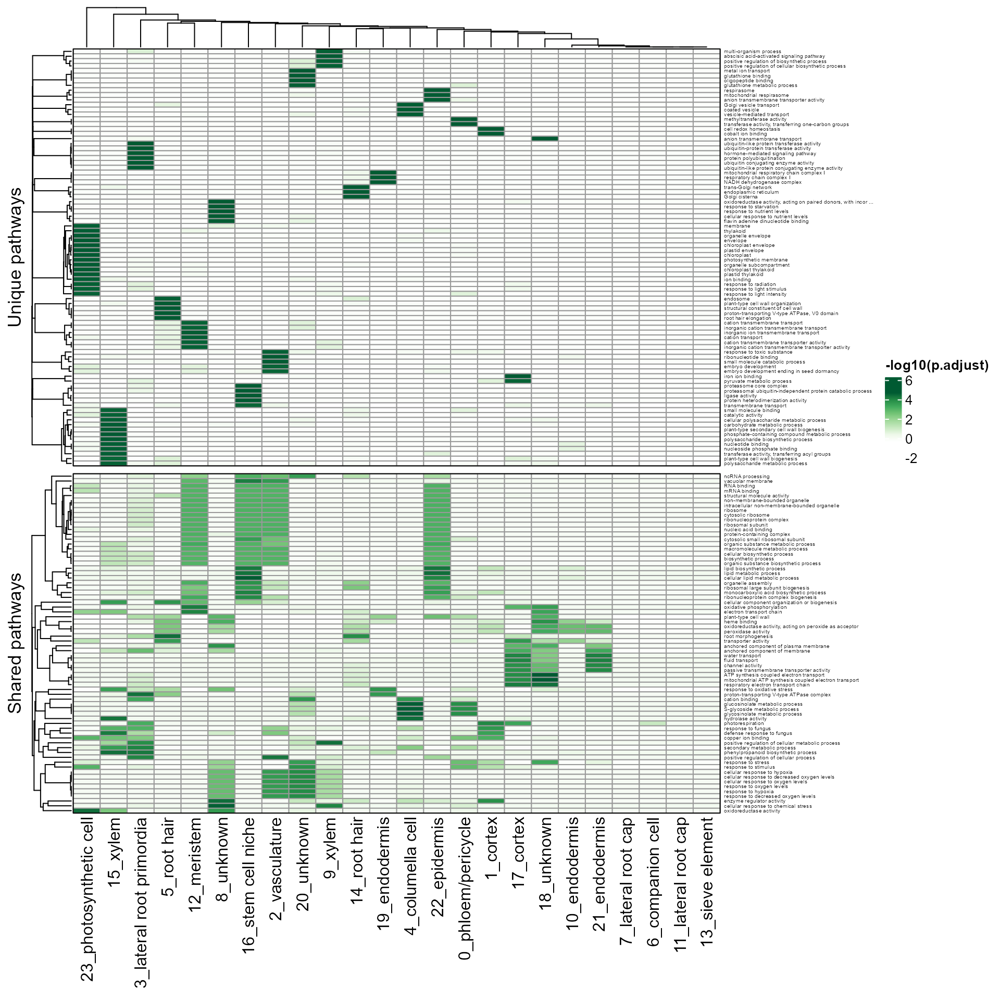
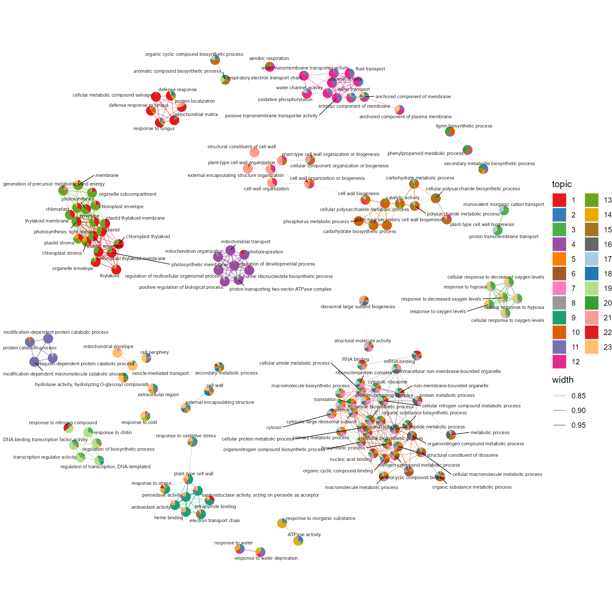

Functional annotation
2023-06-11
Source:vignettes/functional_annotation.Rmd
functional_annotation.RmdscPlant provides methods for Gene Set Enrichment Analysis (GSEA) in model plants. We recommend CellFunTopic package to visualize the GSEA result and perform topic modelling, revealing cellular programs shared across cell types or exclusive to a particular cell type.
We provide a real scRNA-seq data of Arabidopsis thaliana (Zhang et al., 2019) as example data, download here
Gene Set Enrichment Analysis (GSEA)
library(scPlant)
SeuratObj <- RunGSEA_plant(SeuratObj, by = 'GO', GeneIDtype = 'TAIR', minpct = 0.25)Visualize the GSEA result
Refer to https://compbioNJU.github.io/CellFunTopic for more visualization of GSEA result.
library(CellFunTopic)
pathway_unique_shared(SeuratObj, by = "GO", fontsize_row = 4, scale = "row")
hierarchyplot_tree(SeuratObj, by = "GO", topaths = 4, cluster_cutree_k = 14, pathway_cutree_k = 14,
vertex.label.cex=0.5, edge.max.width=1, vertex.size.cex=0.7)Topic modelling
SeuratObj <- runLDA(SeuratObj, k = 23)Visualize the topic modelling result
Refer to https://compbioNJU.github.io/CellFunTopic for more visualization of topic modelling result.
ldaOut <- SeuratObj@misc$ldaOut
betaDF <- tidytext::tidy(ldaOut, matrix = "beta")
pws <- ID2Description(SeuratObj, by = "GO")
betaDF <- dplyr::mutate(betaDF, descrip=unname(pws[term]))
gammaDF <- tidytext::tidy(ldaOut, matrix = "gamma")
cluster_topic_hmp(ldaOut)
plot_sankey(gammaDF, topn=1, plotHeight = 600)
topicNW3(betaDF, topn=10, pws = pws)
Topterms_Topic(betaDF, Topic = 21, topn = 20)
cosine_network_term(SeuratObj, radius = 0.2)